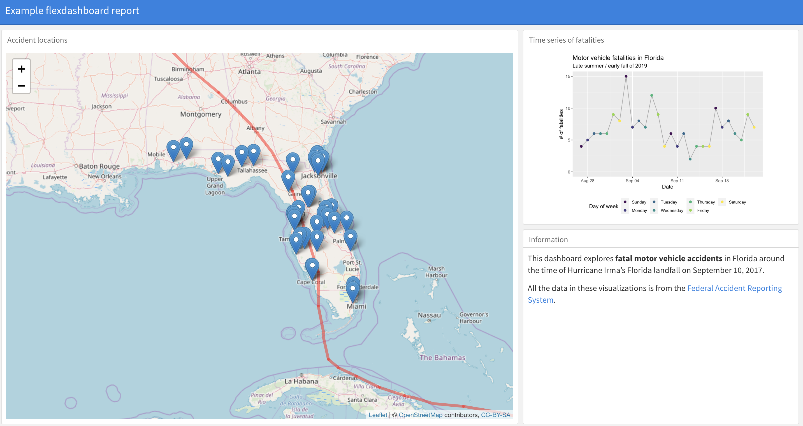

In RStudio, you can also now create a “dashboard” using RMarkdown. A dashboard might be a good choice if you need to summarize or show a lot of information on a single webpage in a way that everything can be viewed in one window. Figure 5.1 gives an example dashboard (although this is just a screenshot—if posted online, the leaflet map in this would be interactive).
Figure 5.1: Example of a dashboard created with RMarkdown.
To create a dashboard, you’ll need to have the flexdashboard package (Iannone, Allaire, and Borges 2018Iannone, Richard, JJ Allaire, and Barbara Borges. 2018. Flexdashboard: R Markdown Format for Flexible Dashboards. https://CRAN.R-project.org/package=flexdashboard.)
installed. If you have this package installed, you can create a dashboard by opening your
RStudio session and selecting “File” -> “New File” -> “RMarkdown”. In the box that pops
up, go to the “From Template” tab and select “Flexdashboard”.
The R Project with examples for this workshop includes an example file for creating a dashboard in the “reports” subdirectory’s “flexdashboard_example.Rmd” file.28 You might notice that there are some other files in this subdirectory that start with “flexdashboard_example”. These are the files that are written out when you knit the RMarkdown file. You should never change these by hand, but these include the files you’ll want to share or post online as the output of the RMarkdown file (e.g., “flexdashboard_example.html”). Open this file and try creating the dashboard using the “Knit” button. You can get an idea for how the code converts to elements of the dashboard by changing some of the code in the RMarkdown file.
The flexdashboard package is extensively documented through its website, where you can find many examples of
how to create dashboards with RMarkdown.